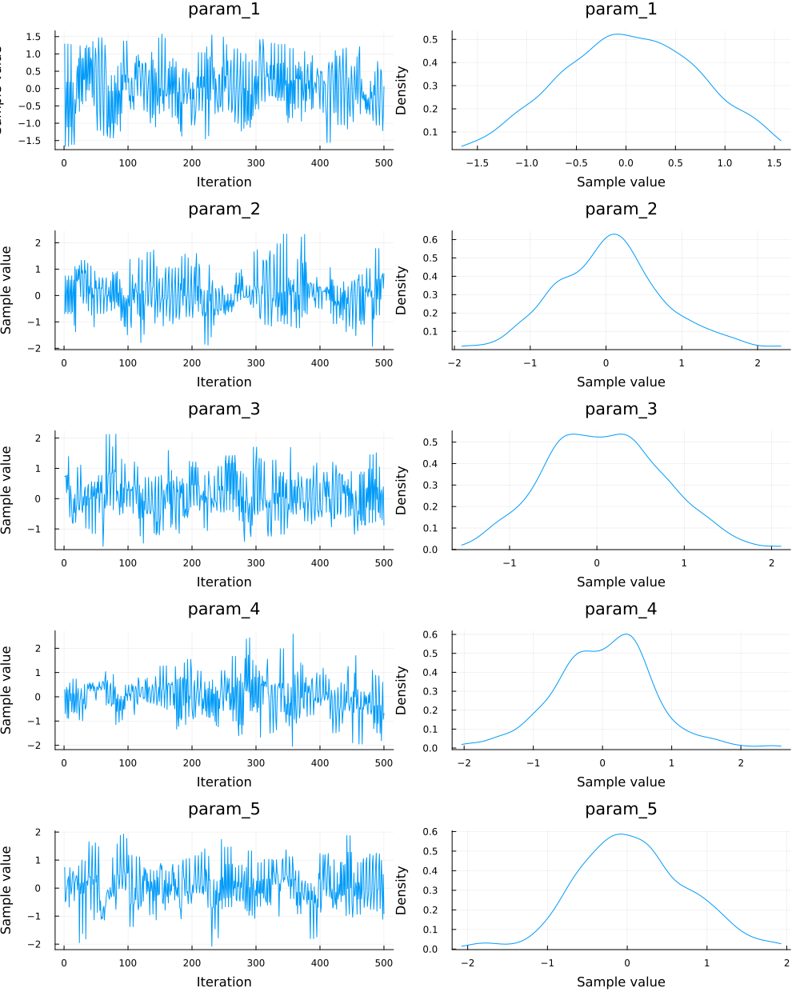
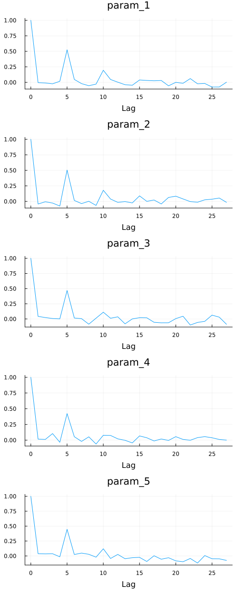
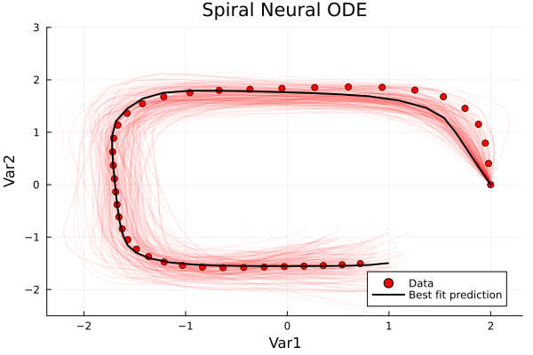

Uncertainty Quantified Deep Bayesian Model Discovery
In this tutorial, we show how SciML can combine the differential equation solvers seamlessly with Bayesian estimation libraries like AdvancedHMC.jl and Turing.jl. This enables converting Neural ODEs to Bayesian Neural ODEs, which enables us to estimate the error in the Neural ODE estimation and forecasting. In this tutorial, a working example of the Bayesian Neural ODE: NUTS sampler is shown.
Step 1: Import Libraries
For this example, we will need the following libraries:
# SciML Libraries
import SciMLSensitivity as SMS
import DifferentialEquations as DE
# ML Tools
import Lux
import Zygote
# External Tools
import Random
import Plots
import AdvancedHMC
import MCMCChains
import StatsPlots
import ComponentArraysSetup: Get the data from the Spiral ODE example
We will also need data to fit against. As a demonstration, we will generate our data using a simple cubic ODE u' = A*u^3 as follows:
u0 = [2.0; 0.0]
datasize = 40
tspan = (0.0, 1)
tsteps = range(tspan[1], tspan[2], length = datasize)
function trueODEfunc(du, u, p, t)
true_A = [-0.1 2.0; -2.0 -0.1]
du .= ((u .^ 3)'true_A)'
end
prob_trueode = DE.ODEProblem(trueODEfunc, u0, tspan)
ode_data = Array(DE.solve(prob_trueode, DE.Tsit5(), saveat = tsteps))2×40 Matrix{Float64}:
2.0 1.97895 1.94728 1.87998 1.74775 … 0.353996 0.53937 0.718119
0.0 0.403905 0.79233 1.15176 1.45561 -1.54217 -1.52816 -1.50614We will want to train a neural network to capture the dynamics that fit ode_data.
Step 2: Define the Neural ODE architecture.
Note that this step potentially offers a lot of flexibility in the number of layers/ number of units in each layer. It may not necessarily be true that a 100 units architecture is better at prediction/forecasting than a 50 unit architecture. On the other hand, a complicated architecture can take a huge computational time without increasing performance.
dudt2 = Lux.Chain(x -> x .^ 3,
Lux.Dense(2, 50, tanh),
Lux.Dense(50, 2))
rng = Random.default_rng()
p, st = Lux.setup(rng, dudt2)
const _st = st
function neuralodefunc(u, p, t)
dudt2(u, p, _st)[1]
end
function prob_neuralode(u0, p)
prob = DE.ODEProblem(neuralodefunc, u0, tspan, p)
sol = DE.solve(prob, DE.Tsit5(), saveat = tsteps)
end
p = ComponentArrays.ComponentArray{Float64}(p)
const _p = pComponentVector{Float64}(layer_1 = Float64[], layer_2 = (weight = [1.8131232261657715 1.5909812450408936; -0.3193267285823822 0.32008838653564453; … ; 0.7791280746459961 1.222288727760315; -0.05747741460800171 2.0123536586761475], bias = [0.3177413046360016, 0.7040334939956665, -0.019317248836159706, 0.07962323725223541, -0.5264988541603088, 0.691810667514801, 0.2936800718307495, 0.0897076278924942, -0.537391722202301, -0.4791612923145294 … -0.5436466932296753, -0.02004976198077202, -0.48299142718315125, -0.09227395057678223, 0.5270644426345825, -0.559441864490509, 0.2238854020833969, -0.07822328805923462, 0.6634225845336914, -0.6196109056472778]), layer_3 = (weight = [0.2388826608657837 0.09922301024198532 … -0.12549720704555511 0.04694287106394768; 0.17785516381263733 0.11406397819519043 … -0.09020955860614777 0.06444751471281052], bias = [-0.09240217506885529, 0.002303055487573147]))Note that the f64 is required to put the Lux neural network into Float64 precision.
Step 3: Define the loss function for the Neural ODE.
function predict_neuralode(p)
p = p isa ComponentArrays.ComponentArray ? p : convert(typeof(_p), p)
Array(prob_neuralode(u0, p))
end
function loss_neuralode(p)
pred = predict_neuralode(p)
loss = sum(abs2, ode_data .- pred)
return loss, pred
endloss_neuralode (generic function with 1 method)Step 4: Now we start integrating the Bayesian estimation workflow as prescribed by the AdvancedHMC interface with the NeuralODE defined above
The AdvancedHMC interface requires us to specify: (a) the Hamiltonian log density and its gradient , (b) the sampler and (c) the step size adaptor function.
For the Hamiltonian log density, we use the loss function. The θ*θ term denotes the use of Gaussian priors.
The user can make several modifications to Step 4. The user can try different acceptance ratios, warmup samples and posterior samples. One can also use the Variational Inference (ADVI) framework, which doesn't work quite as well as NUTS. The SGLD (Stochastic Gradient Langevin Descent) sampler is seen to have a better performance than NUTS. Have a look at https://sebastiancallh.github.io/post/langevin/ for a brief introduction to SGLD.
l(θ) = -sum(abs2, ode_data .- predict_neuralode(θ)) - sum(θ .* θ)
function dldθ(θ)
x, lambda = Zygote.pullback(l, θ)
grad = first(lambda(1))
return x, grad
end
metric = AdvancedHMC.DiagEuclideanMetric(oneunit.(p))
h = AdvancedHMC.Hamiltonian(metric, l, dldθ)Hamiltonian with DiagEuclideanMetric and GaussianKineticWe use the NUTS sampler with an acceptance ratio of δ= 0.45 in this example. In addition, we use Nesterov Dual Averaging for the Step Size adaptation.
We sample using 500 warmup samples and 500 posterior samples.
integrator = AdvancedHMC.Leapfrog(AdvancedHMC.find_good_stepsize(h, p))
kernel = AdvancedHMC.HMCKernel(AdvancedHMC.Trajectory{AdvancedHMC.MultinomialTS}(integrator, AdvancedHMC.GeneralisedNoUTurn()))
adaptor = AdvancedHMC.StanHMCAdaptor(AdvancedHMC.MassMatrixAdaptor(metric), AdvancedHMC.StepSizeAdaptor(0.45, integrator))
samples, stats = AdvancedHMC.sample(h, kernel, p, 500, adaptor, 500; progress = true)(ComponentArrays.ComponentVector{Float64, Vector{Float64}, Tuple{ComponentArrays.Axis{(layer_1 = ViewAxis(1:0, Shaped1DAxis((0,))), layer_2 = ViewAxis(1:150, Axis(weight = ViewAxis(1:100, ShapedAxis((50, 2))), bias = ViewAxis(101:150, Shaped1DAxis((50,))))), layer_3 = ViewAxis(151:252, Axis(weight = ViewAxis(1:100, ShapedAxis((2, 50))), bias = ViewAxis(101:102, Shaped1DAxis((2,))))))}}}[(layer_1 = Float64[], layer_2 = (weight = [1.284994558206724 -0.2033528539837251; -1.664725413241444 0.007281070255832533; … ; -2.5625962848468915 0.8499789093401233; -0.27857839571374926 0.4347972677447917], bias = [-0.22312520150948906, -0.02586455231076528, 0.2569026290596437, -0.6141449740016977, 0.6903398974188493, -1.5178154008174727, 0.991069356971811, -0.7700466598247272, -0.5913916215318032, 0.23443032840627895 … -0.9133771892486713, -0.5557292434759578, 0.5603081289749154, -0.763373844497155, 0.31322972816968914, 2.0312651981080263, 0.25361710066251547, -0.7158180640173053, 0.2930897587539551, -0.15805970597276267]), layer_3 = (weight = [-1.4183838678591825 -0.26828714283560157 … -3.689691821483081 1.509741707007353; 1.7222365418092402 -1.1368928856744411 … -0.5880202379619769 -0.5851973558216711], bias = [-2.2049308517188027, -0.012143299215198529])), (layer_1 = Float64[], layer_2 = (weight = [1.284994558206724 -0.2033528539837251; -1.664725413241444 0.007281070255832533; … ; -2.5625962848468915 0.8499789093401233; -0.27857839571374926 0.4347972677447917], bias = [-0.22312520150948906, -0.02586455231076528, 0.2569026290596437, -0.6141449740016977, 0.6903398974188493, -1.5178154008174727, 0.991069356971811, -0.7700466598247272, -0.5913916215318032, 0.23443032840627895 … -0.9133771892486713, -0.5557292434759578, 0.5603081289749154, -0.763373844497155, 0.31322972816968914, 2.0312651981080263, 0.25361710066251547, -0.7158180640173053, 0.2930897587539551, -0.15805970597276267]), layer_3 = (weight = [-1.4183838678591825 -0.26828714283560157 … -3.689691821483081 1.509741707007353; 1.7222365418092402 -1.1368928856744411 … -0.5880202379619769 -0.5851973558216711], bias = [-2.2049308517188027, -0.012143299215198529])), (layer_1 = Float64[], layer_2 = (weight = [1.2732068562641272 -0.16551366853778127; -1.610341846149316 -0.05324919776665253; … ; -2.5913905841583897 0.8360203627330111; -0.30972420274909024 0.4269738019116233], bias = [-0.26245822229844973, -0.0807370645922377, 0.2844820022589165, -0.5843511040649347, 0.7867192244432952, -1.5466548669630171, 0.9258415697200353, -0.7662664342230504, -0.5927146455839474, 0.21966837346790183 … -0.9618381818340962, -0.5183222909816085, 0.5675235164328846, -0.7725806821755837, 0.38153428414871543, 2.0125186801983794, 0.19218981836011173, -0.7679088708069897, 0.23937037446102083, -0.16172455439614603]), layer_3 = (weight = [-1.5170179213602344 -0.20705359556319738 … -3.605958886769521 1.4415622433347295; 1.744944203891097 -1.0843721624030978 … -0.5408694032982704 -0.6072913900928288], bias = [-2.2444121413809, 0.0160334605008128])), (layer_1 = Float64[], layer_2 = (weight = [-1.6144062296634587 -0.9674239979311652; -0.31131716039684465 -0.4749806466870605; … ; 2.0248383798758116 -0.39535525089692836; 1.0588069079281863 -0.17622593412677698], bias = [0.1825066416770386, -1.021292147186215, -0.5058542066408329, 1.1352413675213784, -0.7076015641224848, 1.1935591603597773, -0.2699935295984679, 0.5573922138363586, 1.6755285242898148, -0.2573228931815726 … 0.1762781851707876, 0.6499826501664578, -1.1779039390372337, 0.22496383631299613, -0.1515436335789622, -1.9492797070495615, -0.3877014426156978, 0.9530566056653316, 0.3453983357063511, 0.21451767459792467]), layer_3 = (weight = [0.7406549554902488 1.492693730072086 … 2.353688809122262 -1.8485384436793564; -1.4006868081038686 0.5848385759926644 … 0.4124523017682502 0.8879149464145978], bias = [-0.031450574872695695, -0.38911935775334994])), (layer_1 = Float64[], layer_2 = (weight = [0.6510669858764282 1.3606773641552095; -0.29009253381705874 -0.38379712648485015; … ; -2.1012161729082193 -0.30939329502586316; -0.4879519979754306 0.8211986943104622], bias = [0.8065426746993526, 0.02391864857968898, 0.5243777753954663, -1.1783704902750545, 0.5298430722330936, -0.48374770769615183, 0.24282276740760242, -0.6832953274318141, -0.10944814012746805, 0.3943881424120366 … -1.4682561146768114, -0.9569867621212844, 0.5590888895261994, -0.8565986297139576, -0.61294840984867, 1.1041277052083218, 0.31896728809144087, 0.20509012291154974, -0.9088011647028733, 0.3085796807896006]), layer_3 = (weight = [-2.316514789405342 1.247866667766795 … -0.8329466130163177 0.5982147318517159; 0.8866987009621873 -0.6290982376066651 … 0.11007585956657992 -0.41381450766509703], bias = [-0.5669567888809546, 0.4111846187688024])), (layer_1 = Float64[], layer_2 = (weight = [0.6194898522908776 1.297055563848971; -0.3638069434565775 -0.33712688463901425; … ; -2.2633396968576474 -0.2372584795647502; -0.7410373394513277 0.8920700605432152], bias = [0.6860517407693493, 0.17108753441763275, 0.6523532149606593, -0.9564451769864034, 0.6970861882474911, -0.24747360588897532, 0.24947642742516732, -0.6990719756645181, 0.1122988001868252, 0.3265539762748219 … -1.2885385494267232, -0.8624325392906432, 0.09195622367701192, -0.871805386149983, -0.4114460470794679, 1.0779860192360593, 0.24909515116570452, 0.35105481313650894, -0.8997340056451537, 0.21420007514003966]), layer_3 = (weight = [-2.3563279748326953 1.3781522801328365 … -0.8220077717511319 0.6013631473483408; 0.8923662774431576 -0.5182073277427184 … 0.010180564712075527 -0.4801891531038785], bias = [-0.501688155786943, 0.27263629288465885])), (layer_1 = Float64[], layer_2 = (weight = [0.2595257951683849 0.9465715392155044; 0.27304570413204365 -0.15341549393841372; … ; -0.5783690731538184 -1.1317133383473226; 0.6467064466807841 0.15504052149233152], bias = [0.3966549329372636, 0.4571662963638251, 0.20042697030801468, -0.2631093804812316, 0.09268659723445968, 0.8317627010506159, 0.41312870758806375, -0.2997214354027428, 1.0447269513831654, 1.7996366375080743 … -0.35535051625518127, -1.8599586696671728, 0.6353551862820287, 0.36361729515308583, -0.47583044545866243, 0.30770894524993575, 0.8878416027627776, -0.42262056198013254, -0.4209106131262036, -0.07822527205981118]), layer_3 = (weight = [-0.8449765230285071 0.8990921368312497 … -0.9737686841767405 0.7014284664562742; 0.18267896984995655 -0.5361384327096914 … 0.2489696921837448 1.7602353324326967], bias = [-0.6466678866100801, 0.6671101213596142])), (layer_1 = Float64[], layer_2 = (weight = [-0.040212436320818126 0.7850783181815661; 0.46236031080023404 -0.08433539704475965; … ; -0.84517134089665 -0.9181925895369016; 1.395560229011387 -0.17478862948787938], bias = [0.44274725248355223, 0.1739008501114456, 0.09841072166044315, -0.1700167009340275, 0.13416341825545672, 0.5517558399465031, 0.7040913332576654, -0.7968458825422977, 1.3993289760787118, 1.4204925810687832 … -0.23450416624182926, -1.7347493917392047, 0.9230727593686474, 0.597799193888633, -0.7730507209185409, 0.006658576769431298, 0.42347688013224294, -0.8852640301084863, -0.7208893226485423, -1.0206750845583732]), layer_3 = (weight = [-1.030646849532654 0.41276142617873746 … -0.1755342320283512 0.8939469805217393; 0.02037745281106578 -0.2869296220841543 … -0.49941716965929367 0.5738647501392408], bias = [0.2942099472703975, 0.41874190366322783])), (layer_1 = Float64[], layer_2 = (weight = [0.14588688079602163 1.0965654415153723; 0.8759714827423368 0.028012669579454145; … ; -1.0329705323727132 -0.5343854211509977; 0.5262638018419806 0.3034867361790909], bias = [0.7514660162204121, -0.05195135120514341, 0.5224493882067662, 0.09767923268351775, -0.08815636233556977, 0.01087363961911288, 0.13873690856240312, -0.7293973091207843, 0.8731414449196052, 0.5812464060030116 … 0.6603743369721347, -1.5001354300183911, 0.20579152098054257, 0.5979200484955807, -0.5606800672372171, 0.03652594325849556, 0.4148408112663987, -1.0169679737406565, -0.25171833311682223, -1.1028905781006717]), layer_3 = (weight = [-1.481320377561004 0.3054304299981781 … -0.26467889490958246 0.16263810900477485; 0.18325491256866444 0.1985972467943866 … -0.8874587738584434 0.3603453939542351], bias = [0.19576387836981268, 0.3024530931687024])), (layer_1 = Float64[], layer_2 = (weight = [-0.03737157139247374 0.29682357060972253; -0.49059743337057826 -0.1747072027096198; … ; -0.48901886523859395 -0.23358648704907806; 1.4293863083774747 -1.1117510102697503], bias = [0.7001432819436412, -0.1042261514862205, 1.2359828508600474, 0.5636634494890986, 0.6619377882974732, 0.3996221852064592, 0.06839000217933931, -0.4600508455756031, 0.3131631552499609, 0.3195392288375109 … 0.35244594013427144, -1.3077457274117092, -0.09791728486932903, 0.5155450957879537, 0.05384352597981123, -0.3791814359927318, -0.6624890322408725, -0.848473864592221, -0.24176510374664398, -0.6066051293354913]), layer_3 = (weight = [-1.2019133289537485 0.2492668472600608 … -0.5949375434701111 0.7082480559251744; 0.2101285745517813 -0.25352722220241614 … -1.7028050959228727 -0.07906927540273895], bias = [-0.4388167758978139, 0.26035049004802374])) … (layer_1 = Float64[], layer_2 = (weight = [-1.0376289731942892 -0.5011813530373815; -0.6575547108058826 -0.006926801463285996; … ; 0.12638993185598205 1.0491513009206128; -0.6015054020933724 -0.5523674412561613], bias = [0.3108431530505654, 0.690600347315169, 0.353523154563797, 0.7964309689017555, 0.10121037900446853, 0.5932691372449957, -1.5133355566747104, 1.238710043978266, 0.2683731727868413, -0.1051475543211008 … 2.2040024651953054, 0.04486386314424714, 0.4490168783997442, -0.8109704631848693, 0.735749183330544, 0.9181816357972538, -0.059765283085174044, -0.04144168490069881, 0.3033906232038005, -0.4390554574170082]), layer_3 = (weight = [1.9040876468606995 0.8183175655913129 … -0.49513623158765835 0.33663510320509055; -0.43968484712649264 0.1172347142310124 … 0.6164399221483059 -1.2835457309616316], bias = [-0.5157193226716161, 0.5099676341601724])), (layer_1 = Float64[], layer_2 = (weight = [0.2007078464045235 -1.162937581551477; 0.01970718428583381 -0.7757487224853233; … ; -0.004662897025191669 -0.6927869579279283; -0.1121368424222694 -1.9763813840046383], bias = [-0.790131920937289, 0.8757520654235436, -0.9070177271065057, 0.18429573327757645, -0.9808938926897273, 0.4893955468415787, -1.1710089529127048, 0.9168639135305554, 0.24538041422248924, 1.1398441600439229 … 1.1978437463741098, -1.4517941306745326, 0.37205007948490404, -0.7927579134128189, 0.039265253843086864, -0.14881455011271333, 0.9127168373136443, -0.2845995718751036, -0.34560683179228124, -0.3650786608785938]), layer_3 = (weight = [1.0597379212897187 0.5999362195681629 … -0.171246477888205 -0.5869860318299535; 0.3007256556533638 -1.2295381800033864 … 0.6232575314213212 -0.2908012166023988], bias = [-0.12537874505954294, 0.11911502599017344])), (layer_1 = Float64[], layer_2 = (weight = [0.2007078464045235 -1.162937581551477; 0.01970718428583381 -0.7757487224853233; … ; -0.004662897025191669 -0.6927869579279283; -0.1121368424222694 -1.9763813840046383], bias = [-0.790131920937289, 0.8757520654235436, -0.9070177271065057, 0.18429573327757645, -0.9808938926897273, 0.4893955468415787, -1.1710089529127048, 0.9168639135305554, 0.24538041422248924, 1.1398441600439229 … 1.1978437463741098, -1.4517941306745326, 0.37205007948490404, -0.7927579134128189, 0.039265253843086864, -0.14881455011271333, 0.9127168373136443, -0.2845995718751036, -0.34560683179228124, -0.3650786608785938]), layer_3 = (weight = [1.0597379212897187 0.5999362195681629 … -0.171246477888205 -0.5869860318299535; 0.3007256556533638 -1.2295381800033864 … 0.6232575314213212 -0.2908012166023988], bias = [-0.12537874505954294, 0.11911502599017344])), (layer_1 = Float64[], layer_2 = (weight = [-0.07123050076023815 1.5302432752547332; 0.8510891212998238 -0.4361104289436877; … ; -0.5567756688036419 -0.06383564364487455; 0.33669023236974127 -0.3584626876968444], bias = [0.14512507509660286, -1.1032268127349087, 0.39653192801458625, -0.6456660069583552, 0.578838242205118, -0.10313131216595316, 0.39615757520645933, -0.6105512169401647, -1.1002429090455987, -0.11628128704289292 … -1.0011872082517717, 0.6651375239005743, -0.5364161210949229, 0.33266356568091315, 0.03153882017138537, -0.08982280905911606, 0.1303049722624132, 0.2355156994348975, 0.19588685478088966, -0.20602042066762677]), layer_3 = (weight = [0.004822230985122761 -0.2512733554161933 … 0.25074662444232776 0.12571363370560037; -0.21554052212465435 -0.007580352011723971 … 0.1828170485031876 0.26328429778820545], bias = [0.1674833885170308, 0.48507718460849125])), (layer_1 = Float64[], layer_2 = (weight = [-0.03920927813951609 1.4791251242500918; 0.884851115360727 -0.4029577324161895; … ; -0.5345495418149182 -0.08805963400223381; 0.3516103614716067 -0.4530116044026933], bias = [0.12499029108046661, -1.1662235360944604, 0.4717710032910638, -0.7186418667265353, 0.6182061192491292, -0.14704011105498854, 0.40094517945977354, -0.6504783171516153, -1.0699379383185228, -0.0778381683011157 … -0.9733539038520108, 0.6103105930693289, -0.5919237346202635, 0.34238322785469155, 0.046104259146259624, -0.10216717363262068, 0.0695466968826604, 0.2474273303341019, 0.17452065389314675, -0.1780855541010522]), layer_3 = (weight = [0.06120368270816455 -0.26895275094371013 … 0.19736946695233662 0.13968102968079468; -0.3288159862845067 0.08523234777247292 … 0.225594146655218 0.33429064599982616], bias = [0.18102419598191521, 0.554939240488793])), (layer_1 = Float64[], layer_2 = (weight = [-0.12914908489216814 1.5594087184175218; 0.8537378075330101 -0.3518987233428326; … ; -0.49843832405751526 -0.2312697326372626; 0.43479114092442744 -0.30730015530482846], bias = [0.1829531326942375, -1.220866387932722, 0.40291474805226013, -0.7880765300728367, 0.4486019058559494, -0.07810948008992222, 0.4393276149638752, -0.7493576668011894, -1.2048220788194117, 0.10913800736513393 … -1.0413747239012445, 0.43677006090234527, -0.7335693835616244, 0.41660272755379113, 0.10559328204423835, -0.01089930037646479, 0.10163408937672888, 0.13631772074627552, 0.11545404551344003, -0.03685735473883421]), layer_3 = (weight = [0.20094803357213703 -0.2031984797060147 … 0.12503009111988797 0.07844295210713083; -0.3606401033508426 0.13829032757682808 … 0.3611785108457345 0.24165680298878198], bias = [0.3254548086644682, 0.5359920347432792])), (layer_1 = Float64[], layer_2 = (weight = [-0.1844462979583629 1.6549333921670786; 0.8662162393549976 -0.4438312925718355; … ; -0.4271086383302254 -0.2095442358430058; 0.3762601762689055 -0.2515222278565534], bias = [0.11496416561212891, -1.2291335536784986, 0.4468350881956546, -0.800888059840704, 0.35598765896380496, -0.11961628181685158, 0.4341465602981065, -0.6548516460789189, -1.2046451812716217, 0.1395876365330582 … -0.9788320720872696, 0.5765880236744911, -0.7122274296714848, 0.5225189314696128, 0.12307537925185792, 0.05915199302338435, 0.11037299788172403, 0.1333244908283707, 0.17496928813600726, -0.04933488754799395]), layer_3 = (weight = [0.3257612074326003 -0.21826953937733531 … 0.2180708520402186 0.053181211154680004; -0.31008717002773817 0.07342340449702761 … 0.35384878369971007 0.28972792330905306], bias = [0.23931007950770833, 0.48830720882078726])), (layer_1 = Float64[], layer_2 = (weight = [0.14138902328112543 1.783442927503004; 0.7880635449463664 -0.21983818542929018; … ; -0.8243637633459462 -0.35632727718546103; 0.5272145443648951 -0.348792747753175], bias = [0.32948139307699154, -1.288966302559767, 0.2830973487114136, -0.8100930210687521, 0.18774759334116303, -0.3902192744628782, 0.19013731694974487, -0.48813841954475296, -1.375386792477062, 0.27759543223370886 … -0.8277123226997172, 0.9521760210390842, -0.429238144244812, 0.6199201321111895, 0.135431014704754, 0.032326028653886604, 0.21126143334844116, -0.023946110766846034, 0.1239376901066344, 0.38069814519010364]), layer_3 = (weight = [0.47789597859865246 -0.20869073756837392 … 0.29038080082918477 0.09557033954772327; -0.4253123075843664 0.5753881799581181 … 0.8667683933091741 0.19240620891643956], bias = [-0.1638257740735059, 0.2936816791644041])), (layer_1 = Float64[], layer_2 = (weight = [-0.04907662022394861 1.779025208766548; 0.7648803776041968 -0.22005045783617388; … ; -0.8687213553457771 -0.35165118058531847; 0.5680310034398899 -0.4649490688977545], bias = [0.29678339539256765, -1.10830336414139, 0.3321960443095894, -0.9096052245419153, 0.07371639913782568, -0.6245542328583149, 0.039534434717945446, -0.523737928242034, -1.3417739976584449, 0.34370631978186605 … -0.8099893781018818, 0.9069941141529726, -0.5107638617050531, 0.9295233512952285, 0.06390220699829327, -0.028686249588704076, 0.2641394692512322, -0.1942446885735787, 0.2249190153808598, 0.4856798274923355]), layer_3 = (weight = [0.3930788170923037 -0.25369512585884507 … 0.325083835402905 0.08258028038344489; -0.3567083143809083 0.815396129618941 … 0.7440657868480738 0.4174888320936375], bias = [0.09709396564846312, 0.22637072873061723])), (layer_1 = Float64[], layer_2 = (weight = [0.9863094154639608 0.2535223154021557; 0.17766814393190306 -0.18158926573786205; … ; -0.03448273130836919 -1.3001345327967557; -0.5700175168383167 1.4740724506212362], bias = [-0.755704159567645, -0.5637095016230734, 0.162640086338356, -0.07380914562509727, 0.7425274449973142, 0.22544613380136305, 0.9354191348243522, 0.9337862697489132, -0.9827594731027616, 0.32158756531857424 … -0.338536835921138, -1.5872908372637367, -0.16350276985117393, -1.271691972432535, -0.5507770708659738, 1.5517673592672212, 0.47097754299274636, 0.7804628033836642, -1.3631398794640062, -0.37119714343716254]), layer_3 = (weight = [0.10360671715805558 0.9917086717880724 … 0.4130565303500411 -1.1937089091054782; -0.20519546545835057 -0.2521298375534519 … -1.8509244801201137 0.06325291095335607], bias = [-0.7399146757217446, 0.1510977946904227]))], NamedTuple[(n_steps = 215, is_accept = true, acceptance_rate = 0.19534883721532342, log_density = -309.232346678199, hamiltonian_energy = 553.9660114213832, hamiltonian_energy_error = -21.83538698682196, max_hamiltonian_energy_error = 1059.9110866293593, tree_depth = 7, numerical_error = true, step_size = 0.025, nom_step_size = 0.025, is_adapt = true), (n_steps = 1, is_accept = true, acceptance_rate = 0.0, log_density = -309.232346678199, hamiltonian_energy = 439.12896439569715, hamiltonian_energy_error = 0.0, max_hamiltonian_energy_error = 8.028231147829268e6, tree_depth = 0, numerical_error = true, step_size = 0.15734782546916115, nom_step_size = 0.15734782546916115, is_adapt = true), (n_steps = 5, is_accept = true, acceptance_rate = 0.048527479762651905, log_density = -309.47696811694084, hamiltonian_energy = 442.6848278301292, hamiltonian_energy_error = 1.6926113083425776, max_hamiltonian_energy_error = 1212.9500243894208, tree_depth = 2, numerical_error = true, step_size = 0.04749299370792488, nom_step_size = 0.04749299370792488, is_adapt = true), (n_steps = 255, is_accept = true, acceptance_rate = 0.5745025033819212, log_density = -271.7894261478287, hamiltonian_energy = 440.4036277960548, hamiltonian_energy_error = -0.645868703619044, max_hamiltonian_energy_error = -4.345138974701058, tree_depth = 8, numerical_error = false, step_size = 0.013117933639124068, nom_step_size = 0.013117933639124068, is_adapt = true), (n_steps = 127, is_accept = true, acceptance_rate = 0.7283433673642317, log_density = -176.25083944117654, hamiltonian_energy = 382.9746866548877, hamiltonian_energy_error = 0.2603515020653049, max_hamiltonian_energy_error = 0.6935106717186272, tree_depth = 7, numerical_error = false, step_size = 0.015132261320738012, nom_step_size = 0.015132261320738012, is_adapt = true), (n_steps = 101, is_accept = true, acceptance_rate = 0.19582967821827618, log_density = -175.8789814486227, hamiltonian_energy = 322.7482261597066, hamiltonian_energy_error = 0.2548165084438665, max_hamiltonian_energy_error = 2420.8929354215816, tree_depth = 6, numerical_error = true, step_size = 0.030713171165344756, nom_step_size = 0.030713171165344756, is_adapt = true), (n_steps = 255, is_accept = true, acceptance_rate = 0.4178957379928899, log_density = -145.32882834994362, hamiltonian_energy = 306.2424148410115, hamiltonian_energy_error = 0.2616961131213884, max_hamiltonian_energy_error = 3.8229715418200385, tree_depth = 8, numerical_error = false, step_size = 0.013328261270165856, nom_step_size = 0.013328261270165856, is_adapt = true), (n_steps = 255, is_accept = true, acceptance_rate = 0.3824039061026352, log_density = -132.02582937694797, hamiltonian_energy = 273.4525770012205, hamiltonian_energy_error = -0.15387917803212758, max_hamiltonian_energy_error = 24.62909706878662, tree_depth = 8, numerical_error = false, step_size = 0.011488333433464669, nom_step_size = 0.011488333433464669, is_adapt = true), (n_steps = 255, is_accept = true, acceptance_rate = 0.8339193472341448, log_density = -115.19336216177352, hamiltonian_energy = 238.8511440603266, hamiltonian_energy_error = 0.2378402334589964, max_hamiltonian_energy_error = -0.5781462131023147, tree_depth = 8, numerical_error = false, step_size = 0.009017469358254655, nom_step_size = 0.009017469358254655, is_adapt = true), (n_steps = 127, is_accept = true, acceptance_rate = 0.2808907870717641, log_density = -118.05802898880826, hamiltonian_energy = 250.8610104990571, hamiltonian_energy_error = -0.1476302872930546, max_hamiltonian_energy_error = 310.3717345553149, tree_depth = 7, numerical_error = false, step_size = 0.029828793485210236, nom_step_size = 0.029828793485210236, is_adapt = true) … (n_steps = 255, is_accept = true, acceptance_rate = 0.6969399592242582, log_density = -143.78841858483048, hamiltonian_energy = 281.4246552363252, hamiltonian_energy_error = -0.5547481352735986, max_hamiltonian_energy_error = 2.0439197826783015, tree_depth = 8, numerical_error = false, step_size = 0.016108563753440483, nom_step_size = 0.016108563753440483, is_adapt = true), (n_steps = 127, is_accept = true, acceptance_rate = 0.7192140077863478, log_density = -142.75179689500163, hamiltonian_energy = 275.59316764452456, hamiltonian_energy_error = -0.17001369065417293, max_hamiltonian_energy_error = 23.441721525003572, tree_depth = 7, numerical_error = false, step_size = 0.0306911073636917, nom_step_size = 0.0306911073636917, is_adapt = true), (n_steps = 62, is_accept = true, acceptance_rate = 0.0029663189377225345, log_density = -142.75179689500163, hamiltonian_energy = 274.8811133200972, hamiltonian_energy_error = 0.0, max_hamiltonian_energy_error = 4039.8801732161382, tree_depth = 5, numerical_error = true, step_size = 0.061224283495920205, nom_step_size = 0.061224283495920205, is_adapt = true), (n_steps = 255, is_accept = true, acceptance_rate = 0.9233353427452747, log_density = -134.0232481692036, hamiltonian_energy = 260.6221455013455, hamiltonian_energy_error = 0.21855465067744717, max_hamiltonian_energy_error = 0.3105293705609711, tree_depth = 8, numerical_error = false, step_size = 0.02054561872828557, nom_step_size = 0.02054561872828557, is_adapt = true), (n_steps = 7, is_accept = true, acceptance_rate = 0.4734739020976074, log_density = -135.50420441049513, hamiltonian_energy = 254.28623805554076, hamiltonian_energy_error = -0.2890858192112944, max_hamiltonian_energy_error = 1021.8802840886419, tree_depth = 2, numerical_error = true, step_size = 0.0671865335579853, nom_step_size = 0.0671865335579853, is_adapt = true), (n_steps = 21, is_accept = true, acceptance_rate = 0.07250793094636995, log_density = -133.33932852734495, hamiltonian_energy = 267.23394960490816, hamiltonian_energy_error = 0.12824502128364657, max_hamiltonian_energy_error = 3592.2821192212637, tree_depth = 4, numerical_error = true, step_size = 0.0720985027426251, nom_step_size = 0.0720985027426251, is_adapt = true), (n_steps = 127, is_accept = true, acceptance_rate = 0.6856491196669142, log_density = -131.30399234995076, hamiltonian_energy = 245.82157638682057, hamiltonian_energy_error = -0.04538888520445994, max_hamiltonian_energy_error = 4.884150485964142, tree_depth = 7, numerical_error = false, step_size = 0.029262253642543302, nom_step_size = 0.029262253642543302, is_adapt = true), (n_steps = 63, is_accept = true, acceptance_rate = 0.28724136678693385, log_density = -128.79656085170686, hamiltonian_energy = 240.84899528835132, hamiltonian_energy_error = -0.04700866094418643, max_hamiltonian_energy_error = 218.5302982726745, tree_depth = 6, numerical_error = false, step_size = 0.052556780071328, nom_step_size = 0.052556780071328, is_adapt = true), (n_steps = 127, is_accept = true, acceptance_rate = 0.14047485594218972, log_density = -134.66125828238316, hamiltonian_energy = 262.34519309016696, hamiltonian_energy_error = 0.2670027912624846, max_hamiltonian_energy_error = 90.04874277370072, tree_depth = 7, numerical_error = false, step_size = 0.0361463514393108, nom_step_size = 0.0361463514393108, is_adapt = true), (n_steps = 255, is_accept = true, acceptance_rate = 0.7786151943018217, log_density = -148.19120942971074, hamiltonian_energy = 272.15795201718686, hamiltonian_energy_error = 0.37902243322770346, max_hamiltonian_energy_error = 0.6429895760296063, tree_depth = 8, numerical_error = false, step_size = 0.017636834518600816, nom_step_size = 0.017636834518600816, is_adapt = true)])Step 5: Plot diagnostics
Now let's make sure the fit is good. This can be done by looking at the chain mixing plot and the autocorrelation plot. First, let's create the chain mixing plot using the plot recipes from ????
samples = hcat(samples...)
samples_reduced = samples[1:5, :]
samples_reshape = reshape(samples_reduced, (500, 5, 1))
Chain_Spiral = MCMCChains.Chains(samples_reshape)
Plots.plot(Chain_Spiral)
Now we check the autocorrelation plot:
MCMCChains.autocorplot(Chain_Spiral)
As another diagnostic, let's check the result on retrodicted data. To do this, we generate solutions of the Neural ODE on samples of the neural network parameters, and check the results of the predictions against the data. Let's start by looking at the time series:
pl = Plots.scatter(tsteps, ode_data[1, :], color = :red, label = "Data: Var1", xlabel = "t",
title = "Spiral Neural ODE")
Plots.scatter!(tsteps, ode_data[2, :], color = :blue, label = "Data: Var2")
for k in 1:300
resol = predict_neuralode(samples[:, 100:end][:, rand(1:400)])
Plots.plot!(tsteps, resol[1, :], alpha = 0.04, color = :red, label = "")
Plots.plot!(tsteps, resol[2, :], alpha = 0.04, color = :blue, label = "")
end
losses = map(x -> loss_neuralode(x)[1], eachcol(samples))
idx = findmin(losses)[2]
prediction = predict_neuralode(samples[:, idx])
Plots.plot!(tsteps, prediction[1, :], color = :black, w = 2, label = "")
Plots.plot!(tsteps, prediction[2, :], color = :black, w = 2, label = "Best fit prediction",
ylims = (-2.5, 3.5))That showed the time series form. We can similarly do a phase-space plot:
pl = Plots.scatter(ode_data[1, :], ode_data[2, :], color = :red, label = "Data", xlabel = "Var1",
ylabel = "Var2", title = "Spiral Neural ODE")
for k in 1:300
resol = predict_neuralode(samples[:, 100:end][:, rand(1:400)])
Plots.plot!(resol[1, :], resol[2, :], alpha = 0.04, color = :red, label = "")
end
Plots.plot!(prediction[1, :], prediction[2, :], color = :black, w = 2,
label = "Best fit prediction", ylims = (-2.5, 3))